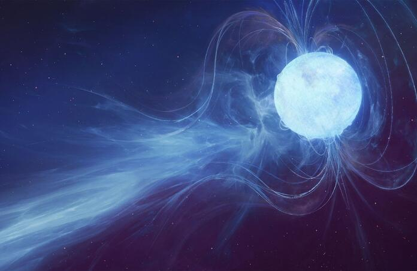
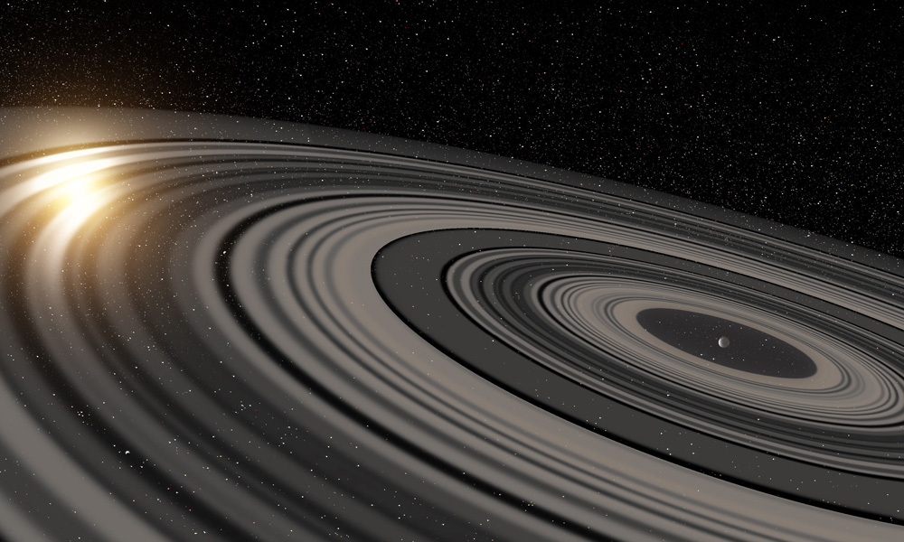
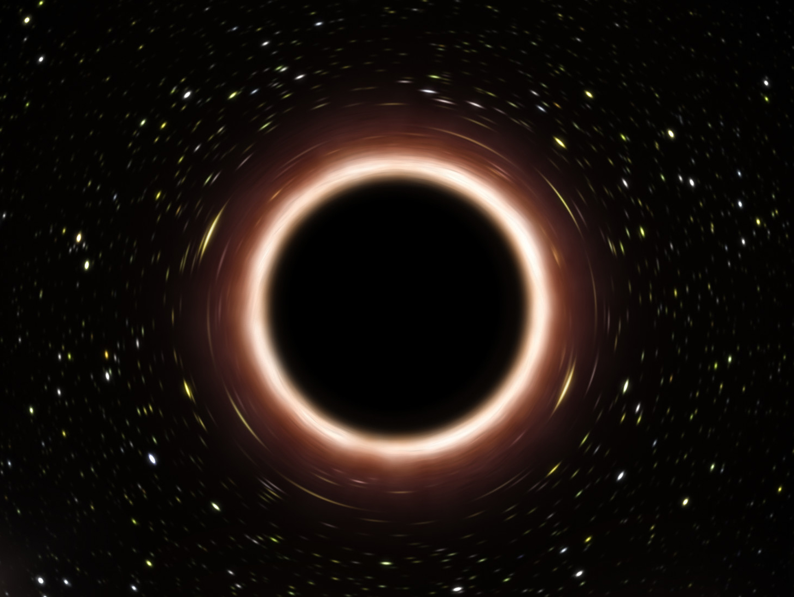
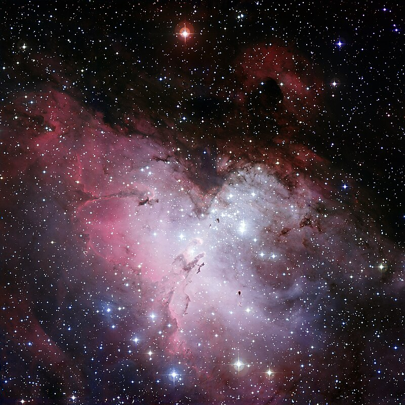
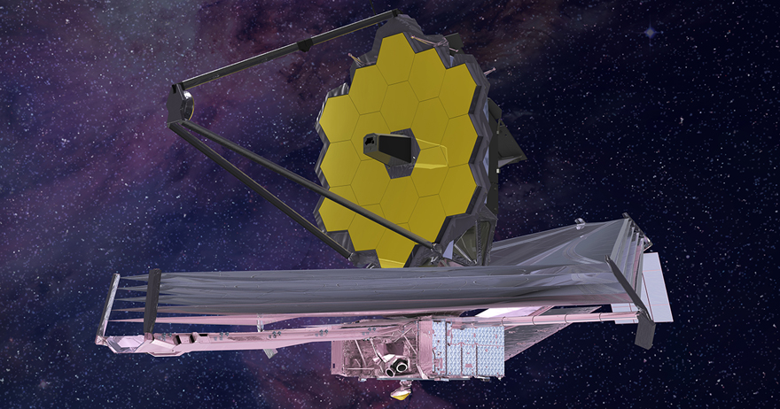
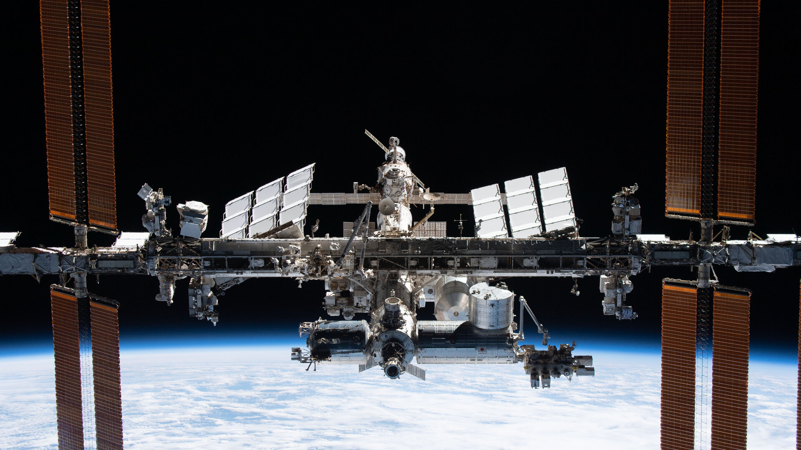
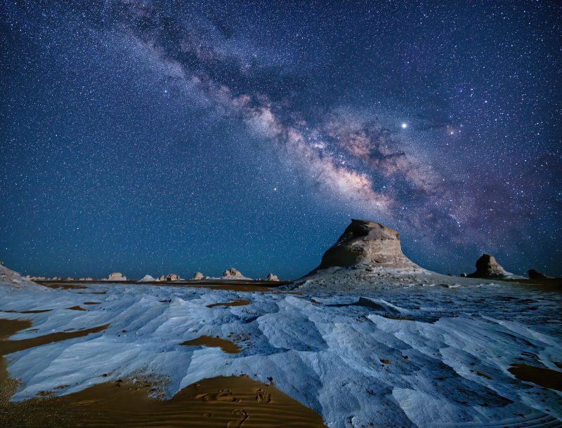

Ovu web stranica je napravio Gabrijel Čoh povodom Svjetskog Tjedna Svemira 2023.
Astronomija
Što je astronomija?
Astronomija je grana znanosti koja se bavi istraživanjem nebeskih tijela i svemira.

nebula carina (karina)
Nebeska tijela
Postoje različite vrste nebeskih tijela. Neke od njih su:
Zvijezde:
- Velike užarene kugle
- Načinjene su od plazme
- Sunce je naša zvijezda u Sunčevom sustavu
- Najbliža zvijezda nama osim Sunca se zove Proxima Centauri
- Najveća poznata zvijezda u svemiru se zove Stephenson 2-18

neutronska zvijezda (magnetar)
Planeti i egzoplaneti:
- Nebeska tijela koja se razlikuju od fiksnih zvijezda po vlastitom prividnom kretanju.
- Najveći planet se zove HD 100546 b
- Ima masu 752 Jupitera
- Promjer mu je 480 000 km
- Od nas je udaljen 358 svjetlosnih godina
- Najveći planet u Sunčevom sustavu je Jupiter
- Nama najbliži planet je Venera
- Udaljena je 179 milijona kilometara od Zemlje
- Temperatura na njoj je 464˙C
- Na njoj se može ispeći pizza na zraku
- Naš planet je Zemlja
- Ona je 3. planet po redu u Sunčevom sustavu
- Ona je jedini poznati planet koji sadrži život na sebi, ali postoji mogućnost za život na drugim planetima
- Egzoplaneti su planeti koji se ne nalaze u Sunčevom sustavu
- Nabliži egzoplanet nama se zove Proxima Centauri b
- Mnogo egzoplaneta imaju dobre uvjete za razvoj života

primjer egzoplaneta - J1407B - mnogo prstenova
Mjeseci:
Što je mjesec?
- Mjesec je manje nebesko tijelo koje orbitira oko nekog planeta.
Naš mjesec
Naš mjesec (lat. Luna) je najbliže nebesko tijelo nama. Njegov period orbite oko zemlje je otprilike 28 dana.
Kroz tih ~28 dana mjesec prolazi kroz 8 faza.
Te faze su:
- Mlađak
- Rastući polumjesec
- Prva četvrt
- Rastući Mjesec
- Uštap / Puni Mjesec
- Padajući Mjesec
- Zadnja četvrt
- Padajući polumjesec

Mjesečeve faze
Mjesec ima 2 strane:
- Strana koja se vidi
- Ova strana se uvijek vidi sa Zemlje jer je period orbite Mjeseca oko Zemlje isti kao period rotacije Zemlje
- Strana koja se ne vidi
- Ova strana se nikada ne vidi sa Zemlje zbog istog razloga

strane Mjeseca (lijeva se vidi, desna se ne vidi)
Crne rupe:
Crna rupa je regija svemira kod koje je gravitacija toliko jaka da svjetlost i sve ostalo nemože pobjeći.
- Najveća poznata crna rupa se zove Phoenix A*
- Ima masu od 5.8 mlrd. Sunca

crna rupa
Nebule:
Nebula/maglica je regija svemira koja je nastala od eksplozije zvijezde (supernove) nakon mnogo vremena.
Neke poznate nebule su:
- Orionova nebula
- Nalazi se u sazvježđu Orion
- Udaljenost - oko 1500 svjetlosnih godina
- Nebula raka
- Nalazi se u sazvježđu Bika
- Udaljenost - oko 6500 svjetlosnih godina
- Nebula orla
- Nalazi se u sazvježđu Zmije
- Udaljenost - oko 7000 svjetlosnih godina

Orlova nebula
Alati za astronomiju:
Teleskopi:
- Svemirski teleskopi:
- Lebde u svemiru
- Slikaju detaljne slike dalekih dijelova svemira
- Neki od poznatijih su:
- James Webb Space Telescope (JWST)
- Hubble Space Telescope ili Hubble
- Ručni teleskopi:
- Drže se kod kuće
- Služe za gledanje ili slikanje noćnog neba, tj. planete, nebule, zvijezde i sl.

teleskop JWST
Istraživačke letjelice:
- Klasične letjelice:
- Lete po Sunčevom sustavu (najčešće oko planeta) te šalju slike natrag na Zemlju
- Imaju snažne baterije i solarno punjenje da čim duže istražuju
- Roveri:
- Šalju se na planete te se voze uokolo i sakupljaju uzorke te slikaju površinu

rover Curiosity
Međunarodna Svemirska Postaja
- Međunarodna Svemirska Postaja (eng. ISS) je najveća modularna postaja blizu Zemljine površine koja nama šalje slike, videozapise i novosti iz svemira.
- Lansirana je 20.11.1998.
- Visina orbite iznad zemlje je 408 km
- Brzina orbite je 7.66 km/s (27 576 km/h)
- Najveća brzina je 28 000 km/h
- Duljina ISS-a je 109 m

ISS
Astronomija stalno otkriva nove stvari, nove zvijezde, planete, mjesece I galaksije. Astronomija je budućnost čovječanstva i budućnost svih nas.
Zahvaljujem svima koji su došli do kraja stranice! Nadam se da ste nešto naučili i da ćete i vi biti zainteresirani za astronomiju jer ima zaista mnogo zanimljivih činjenica i slika vezanu uz nju. Svemir je zaista lijep i beskrajan i ima mnogo još za učiti o njemu.

Mliječna staza
Gabrijel Čoh